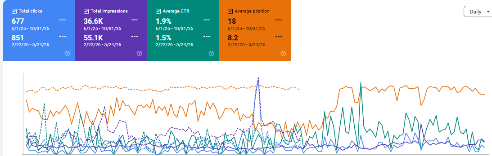

The Flower Shop
SEO strategy focused on Local SEO, keyword research, on-page optimization, technical SEO, content strategy, internal linking and organic search visibility.
Project Overview
The Flower Shop is a flower business website where the SEO strategy focused on improving local search visibility, increasing relevant keyword coverage and strengthening important commercial pages.
SEO Objectives
Local Visibility
Improve visibility for location-based flower and delivery searches.
Keyword Growth
Expand rankings for commercial and long-tail flower-related searches.
On-Page Performance
Improve titles, headings, content structure, metadata and internal links.
Organic Growth
Increase relevant organic visibility and qualified search traffic.
Local SEO Strategy
- Location-focused keyword research
- Local landing page optimization
- Google Business Profile considerations
- Local search intent analysis
- NAP and local relevance review
- Internal linking between location and product pages
- Optimization of flower delivery and service-related pages
Keyword Research
Keyword research focused on identifying high-intent searches related to flowers, bouquets, flower delivery, occasions and local searches.
Commercial Keywords
Searches with strong buying and enquiry intent.
Local Keywords
Location-specific searches for nearby customers.
Product Keywords
Searches related to bouquets, arrangements and floral products.
Long-Tail Keywords
Specific searches targeting customers with clear intent.
On-Page SEO
- SEO title optimization
- Meta description optimization
- Heading structure improvements
- Keyword placement and search-intent alignment
- Product and service page optimization
- Content structure improvements
- Image alt-text optimization
- Internal linking
- Schema markup opportunities
Technical SEO
- Technical SEO auditing
- Crawlability and indexation review
- XML sitemap review
- Robots.txt review
- Canonical URL analysis
- Broken link and redirect analysis
- Page speed and Core Web Vitals review
- Structured data review
Content & Internal Linking
Content was planned around customer intent, seasonal flower searches, product categories, occasions and local delivery needs.
SEO Tools Used
Google Search Console
Search performance, indexing and keyword analysis.
Semrush
Keyword research, competitor and ranking analysis.
Screaming Frog
Technical crawling and website issue analysis.
Google Analytics
Organic traffic and user behaviour analysis.
SEO Results & Performance
Google Search Console data shows significant growth in organic visibility, clicks and average search position following the SEO campaign.
+25.7%
Organic clicks increased from 677 to 851.
+54.8%
Search impressions increased from 35.6K to 55.1K.
18 → 8.2
Average search position improved by 9.8 positions.
1.9% → 1.5%
CTR decreased by 0.4 percentage points while overall search visibility increased substantially.
Organic clicks increased by 25.7%, while search impressions increased by 54.8%.
Average search position improved from 18 to 8.2, representing a 9.8-position improvement and moving average visibility into the first-page range.
CTR changed from 1.9% to 1.5%. This should be presented honestly rather than described as an improvement.

Key Learnings
- Local search intent should guide keyword and page targeting.
- Commercial pages need clear relevance to the searches they target.
- Internal linking can strengthen relationships between products, services and supporting content.
- Technical SEO provides the foundation for crawling and indexation.
- Performance claims should always be supported by verified analytics or Search Console data.